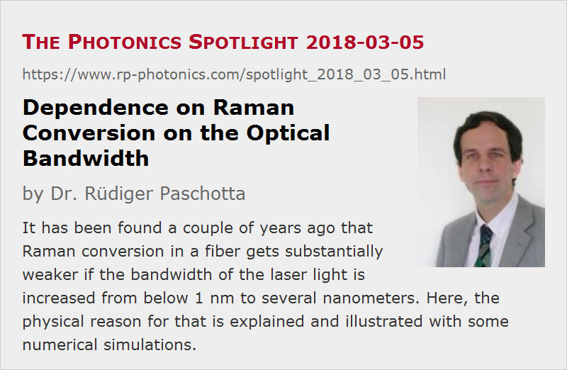

Dependence on Raman Conversion on the Optical Bandwidth
Posted on 2018-03-05 as a part of the Photonics Spotlight (available as e-mail newsletter!)
Permanent link: https://www.rp-photonics.com/spotlight_2018_03_05.html
Author: Dr. Rüdiger Paschotta, RP Photonics Consulting GmbH
Abstract: It has been found a couple of years ago that Raman conversion in a fiber gets substantially weaker if the bandwidth of the laser light is increased from below 1 nm to several nanometers. Here, the physical reason for that is explained and illustrated with some numerical simulations.

Today, I present some interesting physics, which is quite relevant for the performance of high-power fiber amplifiers and lasers and has partially not been published yet in scientific journals.
The achievable output powers from high-power fiber lasers and amplifiers have been enormously raised in recent years. One of the limiting factors is stimulated Raman scattering (SRS) based on the nonlinearity of the fiber. Therefore, it is of high interest how that problem can be mitigated.
In 2014, it has been found in experiments (T. Schreiber et al., Proc. SPIE 8961, 89611T (2014)) that for an emission bandwidth of a few nanometers one obtains substantially weaker Raman conversion than for some sub-nanometer bandwidth; an explanation was not given.
At a first glance, that bandwidth dependence is quite surprising. As the bandwidth of the Raman gain in typical silica-based fibers is several terahertz, which is much more than a signal bandwidth of e.g. 2 nm at 1100 nm, corresponding to only 0.5 THz, one obtains only a slight broadening of the overall Raman gain spectrum and therefore only little reduction of the peak Raman gain. One might then expect that the power level in the fiber can only be decreased by a most a few percent if the signal bandwidth is increased e.g. from 0.1 nm to 2 nm.
However, there is another physical mechanism which can indeed explain that substantial dependence of Raman conversion on the signal bandwidth. To understand that, one needs to consider the statistics of the optical power fluctuations, which depend on the optical bandwidth. Those power fluctuations are relatively slow if the signal bandwidth is small, and for larger signal bandwidth they get faster. Obviously, Raman conversion is strongest near the temporal peaks of those fluctuations. However, it is now important to realize that the Raman-converted light (with a wavelength which is some thousands of nanometers longer) has a significantly higher group velocity; the group velocity mismatch between the laser light in the Raman-converted light can be easily calculated from the chromatic dispersion of the fiber. In case of a large signal bandwidth with correspondingly short power spikes, the Raman-converted light will drift out of those spikes within the fiber length and will thus soon only be able to interact with the region of substantially lower signal power. In case with the small signal bandwidth, that effect will be weaker, since the power spikes are longer, so that the Raman-converted light maintains a good temporal overlap with its power spike over a longer length of fiber.
Curiously, although the bandwidth effect has been seen experimentally already in 2014 (see above), there still does not seem to be any scientific journal paper which clearly explains the underlying physics. Of those papers which I found, there was only one which got close: Wei Liu et al., “General analysis of SRS-limited high-power fiber lasers and design strategy”, Opt. Express 24 (23), 26715 (2016), doi:10.1364/OE.24.026715. Those authors closely investigated the bandwidth dependence with a numerical model, which of course also contains the chromatic dispersion of the fiber, but a physical explanation has nevertheless apparently not been found. Similarly, G. Brochu et al. reported in Proc. SPIE 10085 (doi: 10.1117/12.2248336) numerical simulations on that topic, this time done with our software RP Fiber Power. In a scientific talk at Photonics West 2018 (10512-50), which I attended, Victor Bock from the Fraunhofer-Institut für Angewandte Optik und Feinmechanik in Jena (Germany) mentioned the role of group velocities; it seemed to me that they had realized the physics behind that important dependence, although I think you won't find as detailed explanations as you can find here. It sometimes takes years until some known phenomenon gets fully explained. And sometimes you finally find it explained outside a journal paper – for example here!
Numerical Simulations
The essential physics can already be seen in a numerical model for single-pass light propagation in passive fiber. I have set up a numerical model for that, using our software RP Fiber Power. A first step was to investigate the power fluctuations from a seed source; I assumed a Gaussian-shaped optical spectrum where different spectral components have arbitrary optical phases. I have used the ultrashort pulse propagation feature of the software; a temporally quite limited section of the input light (with a width of 80 ps) is considered as representative for the noisy continuous-wave radiation. The following screen shot shows the seed light in the time and frequency domain for a seed bandwidth of 0.2 nm and an average power of 3 kW:
Now we simulate the propagation of that light in a passive single-mode fiber with a mode radius of 10 um and a group velocity dispersion of +20,000 fs2. The group velocity mismatch between the laser light and the Raman-converted light (with a 13-THz Raman shift) is then 1.63 ps/m; it is thus weak within one meter but already significant in 10 meters. After 10 m of fiber, we get the following:
Here, a substantial fast power fluctuation due to SRS is observed only for the strongest peak in the time window, and primarily at its leading wing, because the Raman-shifted light is faster in the fiber. The optical spectrum shows a substantial distortion due to the fiber nonlinearity and also the Raman-shifted light around 1035–1060 nm.
The following diagram shows how the power of the Raman-shifted light rises (integrated from 1030 nm to 1065 nm) along the fiber (using a logarithmic power scale):
For a larger bandwidth of e.g. 2 nm, the typical height of the power spikes remains unchanged, only the spikes get substantially shorter:
After 10 m of fiber, wee see substantial power fluctuations everywhere in the time trace:
Nevertheless, there is now much less Raman-shifted light – no more visible in the optical spectrum (at least on a linear scale as used here). The rise of Raman-shifted power is initially similar as before, but then suddenly much slower due to the group velocity mismatch effect as explained above:
You see that the resulting Raman-shifted power has been reduced from hundreds of Watts to well below 1 W – so the effect is really substantial! You could thus propagate a substantially higher optical power in the fiber before getting substantial Raman conversion.
The following diagram shows how the Raman power after 10 m of fiber depends on the optical bandwidth of the input:
Interestingly, for zero input bandwidth (monochromatic light input), there is not much Raman conversion, since there is no beating between different frequency components, which can increase the peak power. However, in practice one would obtain substantial trouble with stimulated Brillouin scattering (SBS), which is ignored in the simulation. For a finite but small bandwidth, Raman conversion is relatively strong, but that gets substantially weaker when the bandwidth is increased. However, once the bandwidth reaches a few nanometers, it does not help to increase it further – essentially because although Raman-shifted light drifts away from the laser light which generated it, it can run into the next spike.
The diagram still contain some random fluctuations, because the chosen time window was only 80 ps long, which particularly for small input bandwidths is too short to be fully representative. Therefore, you should not take serious some details, like the apparent local drops for 1 nm or 3.25 nm bandwidth. One could run the simulation with a longer time window, just requiring more computation time. The diagram as shown above required about half an hour on my office PC.
Another interesting observation is that during propagation in the fiber the peak power of the strong spikes is reduced. You can verify that in the diagrams shown above.
Note also that the results of course also depend on the fiber length – not only because a longer fiber means over all more nonlinearity, but also because the group velocity mismatch becomes stronger.
What Happens in Lasers and Amplifiers?
In a fiber amplifier system, the situation is slightly different, since the signal light (but not the Raman-shifted light) is continuously amplified; nevertheless, the basic physics are the same as in the passive fiber.
In a laser resonator, things can be somewhat more complicated. You may have a narrow-band fiber Bragg grating as the output coupler, enforcing a relatively small emission bandwidth; that indeed causes more Raman conversion (or a lower power limit) than a grating with larger bandwidth. Well, it is not obvious what laser bandwidth one obtains for a given grating bandwidth, since we have competing effects of the fiber nonlinearity and the spectral filtering at the grating. However, the basic physics behind the bandwidth dependence are again the same.
This article is a posting of the Photonics Spotlight, authored by Dr. Rüdiger Paschotta. You may link to this page and cite it, because its location is permanent. See also the RP Photonics Encyclopedia.
Note that you can also receive the articles in the form of a newsletter or with an RSS feed.
Questions and Comments from Users
Here you can submit questions and comments. As far as they get accepted by the author, they will appear above this paragraph together with the author’s answer. The author will decide on acceptance based on certain criteria. Essentially, the issue must be of sufficiently broad interest.
Please do not enter personal data here; we would otherwise delete it soon. (See also our privacy declaration.) If you wish to receive personal feedback or consultancy from the author, please contact him e.g. via e-mail.
By submitting the information, you give your consent to the potential publication of your inputs on our website according to our rules. (If you later retract your consent, we will delete those inputs.) As your inputs are first reviewed by the author, they may be published with some delay.
|  |
If you like this page, please share the link with your friends and colleagues, e.g. via social media:
These sharing buttons are implemented in a privacy-friendly way!